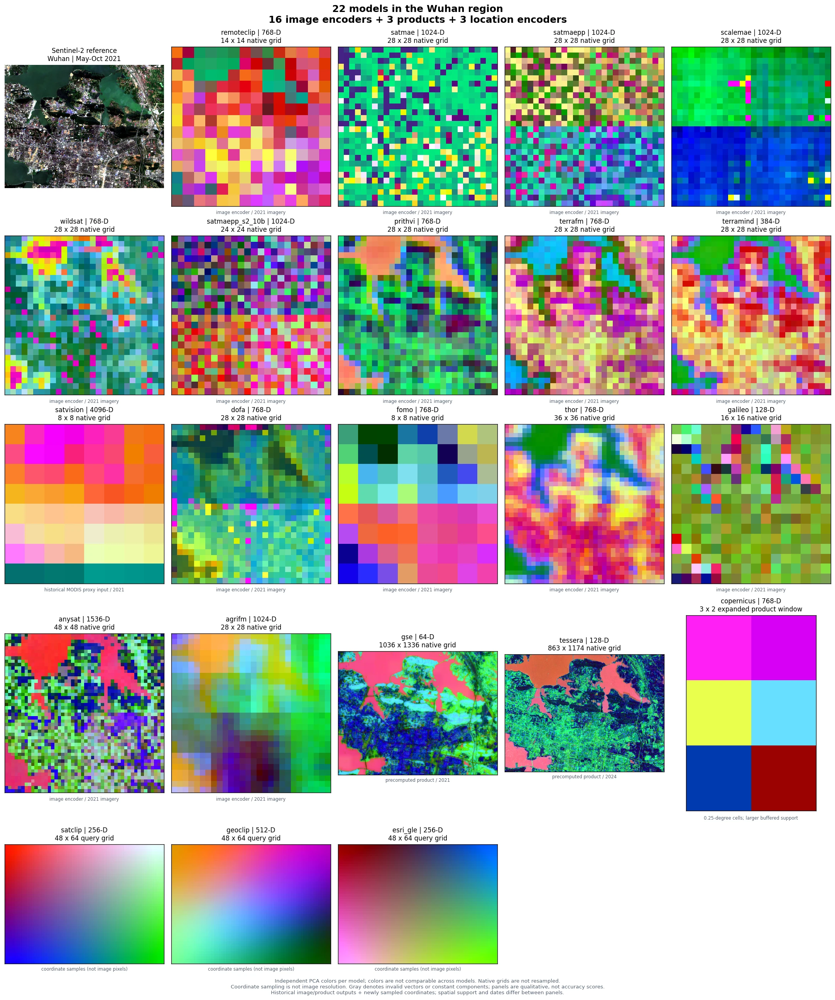
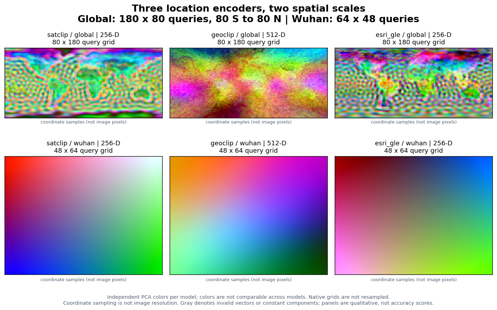

Compare many models in one figure¶
Use the same get_embedding request for individual models, then use
compare_embeddings and plot_embedding_comparison to collect a whole model
selection into one figure. The figure retains every model's native grid and
reports failed requests explicitly.
A real 22-model example¶

This gallery combines 16 image encoders, three precomputed products, and three
location encoders for Wuhan, China. Most panels cover
[114.35, 30.48, 114.47, 30.56]; Copernicus shows its larger buffered product
window. Image encoders and two products use four archived feature blocks; the three location
encoders were evaluated at the same 3,072 coordinate centers for this gallery.
These are genuine model outputs. No placeholder panels or generated imagery are
used.
The archive is a historical qualitative diagnostic, not a new benchmark or model ranking. It intentionally shows different spatial and temporal support:
| Panels | Input and support |
|---|---|
| Sentinel-2 reference and image encoders | Historical May–October 2021 imagery; model-specific bands and native feature grids |
| SatVision | Historical MODIS proxy input, including a reflectance/LST proxy; not a strict reproduction of its original 14-band TOA input recipe |
Google Satellite Embedding (gse) |
Annual 2021 product, 1,036 × 1,336 cached samples |
| Tessera | Annual 2024 product, 863 × 1,174 cached samples |
| Copernicus | One expanded 15 km buffered query of the released 0.25° product; 3 × 2 cached samples, no requested-date semantics |
| SatCLIP, GeoCLIP, Esri GLE | Longitude/latitude only; 48 × 64 coordinate queries, with no imagery or requested date |
For the image encoders, GSE, and Tessera, four neighboring blocks are arranged north to south and west to east. Each block's stored sample orientation is retained from the historical diagnostic. Where product blocks have unequal edge dimensions, missing edge cells are gray padding; feature values are never interpolated to another model's grid. Some historical encoders do not provide georeferenced token-orientation metadata, so this figure alone cannot establish pixel-level alignment.
Copernicus's historical adjacent queries returned overlapping product cells:
20 returned vectors contained only six distinct vectors. The gallery therefore
shows one complete 3 × 2 query window rather than tiling repeated values into
a false continuous map. Its effective query bounds are approximately
[114.2236, 30.3653, 114.5364, 30.6347], larger than the other Wuhan panels.
Every panel uses its own three-component PCA projection and 2nd–98th percentile stretch. A red feature in one panel has no shared meaning with red in another. Different visual texture, feature dimensions, or apparent detail do not establish downstream accuracy. Query spacing for location encoders is sampling density, not a claim of learned physical resolution.
Download the full-resolution figure · Read the source hashes and run provenance

Start with a small selection¶
Install the plotting extra and each selected model's runtime. Location-only examples need no imagery or Earth Engine authentication:
git clone https://github.com/GISWLH/earth-embedding.git
cd earth-embedding
pip install -e ".[plot,location]"
from earth_embedding import (
BBox, OutputSpec, compare_embeddings, plot_embedding_comparison,
)
models = ["satclip", "geoclip", "esri_gle"]
comparison = compare_embeddings(
models,
spatial=BBox(114.35, 30.48, 114.47, 30.56),
output=OutputSpec.grid(),
grid_step_m=320, # coordinate sampling, not image resolution
device="cpu",
)
figure = plot_embedding_comparison(
comparison,
columns=3,
save_path="location-comparison.png",
)
comparison.embeddings["esri_gle"] is the original Embedding, including its
metadata. comparison.summary() reports successful shapes and errors. The
default stops at an error; set on_error="record" when you want the remaining
models to run and failed panels to remain visible.
Compare the full catalog¶
models=None selects list_models(). Image encoders use a seasonal window,
annual products receive a year, and location encoders ignore time. A full run
requires each model's dependencies, weights, and provider access; see the
model setup pages.
from earth_embedding import (
BBox, OutputSpec, TemporalSpec,
compare_embeddings, plot_embedding_comparison,
)
comparison = compare_embeddings(
spatial=BBox(114.35, 30.48, 114.47, 30.56),
temporal=TemporalSpec.range("2021-05-01", "2021-10-31"),
output=OutputSpec.grid(),
model_options={
"gse": {"temporal": TemporalSpec.year(2021)},
"tessera": {"temporal": TemporalSpec.year(2024)},
"copernicus": {"temporal": TemporalSpec.year(2021)},
"satclip": {"temporal": None, "grid_step_m": 320},
"geoclip": {"temporal": None, "grid_step_m": 320},
"esri_gle": {"temporal": None, "grid_step_m": 320},
},
on_error="record",
)
figure = plot_embedding_comparison(
comparison,
columns=5,
save_path="all-models.png",
)
print(comparison.summary())
This is a fresh inference example; its grids and model settings need not match
the archived gallery. Tessera's year is explicit because the illustrated archive
uses 2024. Copernicus is a fixed released product and does not select a requested
acquisition date. Model-specific options remain visible in model_options.
The comparison helper runs models sequentially and clears model runtime caches
between requests by default. This limits accumulated weight memory while
preserving completed embeddings. Set release_models=False when repeated calls
should reuse loaded models. Large dense products can still occupy substantial
memory in the returned report.
For a runnable command that saves every successful feature array, metadata, error report, and figure:
python examples/compare_models.py --models satclip geoclip esri_gle --device cpu
python examples/compare_models.py --models all --out outputs/all-models
The command exits nonzero for incomplete results unless --allow-errors is
explicitly selected. Changing the model list, region, dates, or output directory
does not require editing the plotting code.
Location encoders at two scales¶

The top row evaluates 14,400 coordinate centers on a 180 × 80 longitude / latitude lattice spanning 180° W–180° E and 80° S–80° N. The bottom row evaluates the Wuhan area on a 64 × 48 lattice. All three encoders receive the same coordinates in each row. Global and local panels have independently fitted PCA colors; they are not cross-scale color matches. The smooth local fields show the models' coordinate-only behavior over a small geographic extent.
For a point list rather than an area, keep GIS longitude/latitude order:
import numpy as np
from earth_embedding import get_location_embeddings, plot_embedding_comparison
lon, lat = np.meshgrid(np.linspace(70, 140, 80), np.linspace(5, 55, 60))
points = np.column_stack([lon.ravel(), lat.ravel()])
embeddings = {
model: get_location_embeddings(model, points, device="cpu")
for model in ("satclip", "geoclip", "esri_gle")
}
figure = plot_embedding_comparison(
embeddings,
lonlat=points,
columns=3,
save_path="asia-location-encoders.png",
)
The (N, D) outputs preserve input order. Supplying lonlat makes the plot a
spatial scatter; without coordinates it is clearly labeled as a sample strip.
See SatCLIP, GeoCLIP, and
Esri GLE for checkpoints, attribution, and model terms.
Rebuild and provenance¶
From a checkout, this command rebuilds the two-scale location figure using real
public checkpoints, caches the computed arrays under work/gallery-cache/, and
records coordinate, feature, checkpoint, and image SHA-256 hashes:
python scripts/build_comparison_gallery.py --device cpu
The full 22-model gallery additionally needs the historical four-block feature archive, which is not bundled in this public repository:
python scripts/build_comparison_gallery.py \
--archive /path/to/part2_model_map_figure \
--device cpu
The archive must include blocks_2x/<model>/block_rXX_cXX.npz, corresponding JSON
metadata, manifest_2x.json, and its Sentinel-2 reference PNG. The script reads
those inputs without modifying them. It does not redownload image data or rerun
the 19 historical image/product pipelines. Top-level Git LFS pointer files are
not used as feature arrays.
The published provenance JSON records every source block and metadata hash, original model metadata, date differences, runtime versions, coordinate grids, checkpoint hashes, and the exact figure hashes. No model weights are redistributed with these illustrations.